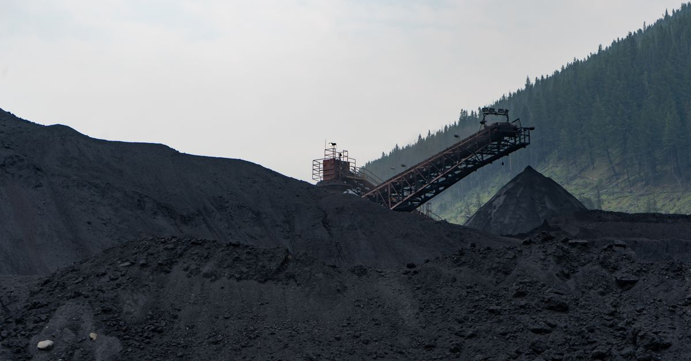

Energia
Metan kopalniany w śladzie węglowym energii — dlaczego alokacja decyduje o wyniku
Kopalnia wydobywa z jednego złoża węgiel energetyczny i węgiel koksowy, a metan uchodzi z górotworu wspólnie dla obu. Pytanie, na które musi odpowiedzieć każda analiza cyklu życia energii elektrycznej, nie brzmi więc „ile metanu emitują kopalnie”, tylko „ile z tej emisji obciąża prąd, a ile stal”. Odpowiedzi nie ustala się uznaniowo — dają ją reguły alokacji z ISO 14044 i EN 15804+A2.
W skrócie · 2 wnioski
- Kluczowa liczba
Współczynnik ocieplenia globalnego metanu pochodzenia kopalnego w horyzoncie 100 lat
wynosi 29,8 kg CO₂e/kg wg IPCC AR6 (WG1, tabela 7.15).
Ta sama masa metanu waży w bilansie prawie trzydzieści razy więcej niż dwutlenek węgla. - Co z tego wynika Węgiel koksowy jest trwale i wyraźnie droższy od energetycznego — różnica cen jest wielokrotnie większa niż próg 25%. Przy takiej rozpiętości norma nie zostawia analitykowi wyboru między alokacją masową a ekonomiczną.
W tym artykule

Dlaczego metan kopalniany w ogóle liczy się w bilansie energii
Ślad węglowy energii elektrycznej ze spalania węgla nie kończy się na kominie elektrowni. Granica systemu w pełnej analizie cyklu życia obejmuje także wydobycie paliwa, a przy węglu kamiennym najistotniejszym składnikiem tego etapu jest metan uwalniany z górotworu podczas eksploatacji złoża — w literaturze branżowej opisywany jako coal mine methane.
Skala zjawiska zależy od metanowości konkretnego złoża i sposobu zagospodarowania ujętego gazu. Część metanu jest wychwytywana przez systemy odmetanowania i wykorzystywana energetycznie lub spalana w pochodniach, część uchodzi z powietrzem wentylacyjnym w stężeniach zbyt niskich, by dało się je łatwo zagospodarować. W Polsce dane o metanowości poszczególnych zakładów górniczych publikuje corocznie Wyższy Urząd Górniczy w sprawozdaniach o stanie bezpieczeństwa w górnictwie, w podziale na kopalnie.
Jedno złoże, dwa produkty o różnym przeznaczeniu
Tu zaczyna się właściwy problem metodyczny. Polskie kopalnie węgla kamiennego wydobywają dwa zasadniczo różne produkty. Węgiel energetyczny trafia do elektrowni i ciepłowni. Węgiel koksowy trafia do koksowni, a stamtąd do wielkich pieców — jest surowcem hutniczym, nie paliwem energetycznym, i figuruje na unijnej liście surowców krytycznych.
Metan nie odróżnia jednak przeznaczenia urobku. Uchodzi ze złoża w trakcie eksploatacji, zanim ktokolwiek zdecyduje, do której gałęzi przemysłu pojedzie wydobyty węgiel. Powstaje sytuacja podręcznikowa dla analizy cyklu życia: jeden proces, jedna emisja, dwa wyroby o odmiennych rynkach zbytu.
Konsekwencja jest praktyczna i policzalna. Jeżeli kopalnia o wysokiej metanowości wydobywa przede wszystkim węgiel koksowy, a jej emisję przypiszemy w całości energii elektrycznej, wskaźnik dla sieci zostanie zawyżony o wielkość, która w rzeczywistości obciąża produkcję stali. Zależność działa też w drugą stronę — pominięcie metanu z kopalń dostarczających węgiel do elektrowni zaniża wynik.
Co mówią normy
ISO 14044:2006 w §4.3.4.2 porządkuje postępowanie w trzech krokach. Najpierw należy alokacji unikać — przez podział procesu na podprocesy albo rozszerzenie granic systemu. Gdy to niemożliwe, emisje dzieli się według zależności fizycznej między produktami. Dopiero gdy zależności fizycznej nie da się sensownie ustalić, stosuje się inne relacje, w tym wartość ekonomiczną.
EN 15804+A2:2019 uszczegóławia tę regułę dla wyrobów budowlanych w §6.4.3.2. Norma wskazuje wprost, że przy współproduktach o istotnie różnej wartości rynkowej podział według masy zniekształca obraz, i wyznacza próg: gdy różnica wartości ekonomicznej współproduktów przekracza 25%, alokację prowadzi się według wartości, a nie według masy.
Dlaczego to nie jest szczegół dla specjalistów
Wybór klucza alokacji nie jest kwestią preferencji autora analizy. Jest decyzją metodyczną, która musi zostać udokumentowana, uzasadniona i poddana weryfikacji — EN 15804+A2 wymaga opisania zastosowanych reguł alokacji w dokumentacji deklaracji, a ISO 14044 nakazuje wykazanie wrażliwości wyniku na przyjęte założenia.
Dla odbiorcy wskaźnika oznacza to prosty test jakości. Jeżeli dokumentacja podaje wartość składnika metanowego bez wyjaśnienia, jak podzielono emisję między węgiel energetyczny i koksowy, to nie wiadomo, co ta liczba właściwie mierzy. Sama liczba nie wystarcza — potrzebny jest opis granicy, klucza podziału i danych, na których go oparto.
Jak to zweryfikować w praktyce
Rachunek daje się odtworzyć z danych publicznych. Metanowość poszczególnych kopalń i stopień zagospodarowania ujętego gazu wynikają ze sprawozdań Wyższego Urzędu Górniczego. Strukturę produkcji w podziale na węgiel energetyczny i koksowy przedsiębiorstwa górnicze notowane na giełdzie ujawniają w raportach rocznych, w podziale na poszczególne zakłady. Ceny obu sortymentów publikuje Agencja Rozwoju Przemysłu w comiesięcznych indeksach rynku węgla.
Zestawienie tych trzech źródeł pozwala sprawdzić, czy przyjęty w danym wskaźniku klucz alokacji odpowiada rzeczywistej strukturze wydobycia — a to jest dokładnie ten rodzaj kontroli, którego weryfikator deklaracji środowiskowej ma prawo oczekiwać.